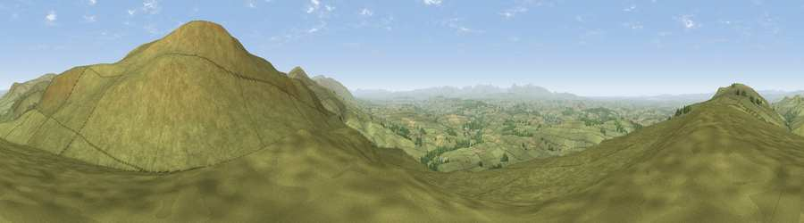

Viewpoint near Cumrew
#2938 in England · top 6% of its area beats it · near CumrewWhere it is
The exact computed spot (NY 58025 49275). Click the marker for map links.
The view, rendered

A 360° render of this exact spot computed from the terrain model, tree cover and land cover — summer colours, afternoon light, calibrated against photographs of famous viewpoints. Real trees, hedges and buildings will differ in detail.
The panorama
Grey silhouette: terrain skyline in each direction (720 bearings, Earth curvature and refraction included). Dashed green: skyline with trees (+15 m) and buildings (+8 m) as obstacles. Blue strip: how far the ground is visible on each bearing.
Where the view opens
Wedge length = distance to the farthest visible ground on that bearing (vegetation-aware). Rings at 10, 25 and 50 km.
What fills the view
93% grassland · 3% woodland · 3% cropland
Angular shares of the visible panorama (visual magnitude), not map area. Landscape diversity 0.13 (0–1 Shannon).
Key numbers
More beautiful places nearby
The staircase of upgrades: each row has a higher view potential than everything closer. Driving times are estimates from straight-line distance, calibrated against real road routing — check an actual route before setting out.
| Place | Direction | Drive | Score |
|---|---|---|---|
| Viewpoint near Cumrew | E · 1 km | ~2 min | 77.2 |
| Viewpoint near Cumrew | NW · 3 km | ~8 min | 78.8 |
| Barrock Fell | W · 11 km | ~22 min | 81.1 |
| Viewpoint near Watermillock | SSW · 31 km | ~48 min | 82.6 |
| Viewpoint near Watermillock | SSW · 31 km | ~48 min | 83.5 |
| Skiddaw South Top | WSW · 38 km | ~57 min | 85.8 |
| Viewpoint near Applethwaite | WSW · 39 km | ~58 min | 86.7 |
| Long Side | WSW · 39 km | ~58 min | 89.5 |
54.83653, -2.65504 · source: screening · position refined by local search. Computed location — check access rights before visiting.